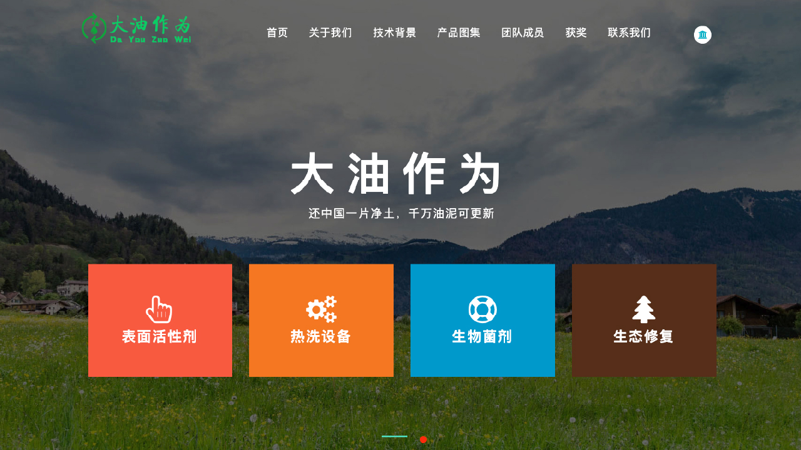

Environmental Remediation
大油作为: Oily Sludge Remediation Expert
大油作为 is an environmental project focused on oily sludge pollution generated during petroleum development. The project provides remediation plans, technical products, and supporting services for petroleum enterprises.
Project website
Technical Focus
The remediation workflow combines hot-washing equipment, biological surfactants, microbial agents, and ecological restoration. It is designed for oily sludge with different sources, characteristics, and oil contents.
Advantages
- Low-cost and operationally simple remediation workflow
- Greener treatment with reduced secondary pollution
- Flexible configuration for different pollution conditions
- Oil recovery rate above 90% in the current technical version
Project Background
China produces more than 10 million tons of oily sludge every year. The project aims to improve oily sludge treatment, promote cleaner petroleum production, and raise awareness of soil protection.
My Role
I worked on website development, backend maintenance, project documentation, and digital presentation. The project won the Provincial-Level Bronze Award in the 2022 Challenger Cup Entrepreneurship Plan Competition and a university-level silver award at Northwest A&F University.